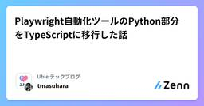

Ubie テックブログのフィード
https://zenn.dev/p/ubie_dev
Ubie株式会社のテックブログです。 採用情報：https://recruit.ubie.life/engineer
フィード

Playwright自動化ツールのPython部分をTypeScriptに移行した話
Ubie テックブログのフィード
UbieでQAエンジニアをしている @tmasuhara です。今日はプロダクトのオペレーションに使っているPlaywrightベースのツールにおける技術スタック移行について書きます。 ツールの概要このツールは、YAML設定ファイルに基づいてPlaywrightテストを動的生成・実行する自動化ツールです。非エンジニアでもYAMLファイルを編集するだけで複雑なテストシナリオを作成できるのが特徴です。テスト対象のシステムについてはこの場では割愛させてください。 処理の流れYAMLファイルでテストパラメータを定義テストケース生成スクリプトがテンプレート内のプレースホルダー（...
4日前

ウェブサービス開発におけるイベントデータモデリングの実践ガイド
Ubie テックブログのフィード
はじめにこんにちは、UbieでBIエンジニアをしているyagです。Ubieでは複数のチームが主体的にデータ分析パイプラインやデータマート整備を行い、データエンジニアやデータアナリストに閉じない形でデータ分析の民主化を達成しています。それを支えるのは共通して構築しているデータモデリングの技術です。具体的にはデータマートの論理的な分割であったり、サービスやビジネスに対応した形でのマートのオーナーシップの明確化、意図しないデータ毀損が発生しないような各種制約など、データから安定して価値を生み出す基盤が構築されています。https://zenn.dev/ubie_dev/article...
11日前
「コミュニケーションの交差点」に配置して浸透する、社内生成 AI プラットフォーム
Ubie テックブログのフィード
「社内の生成 AI 活用がもっと劇的に進めばいいのに」生成 AI の進化は激しく有用な存在になってきたものの、それを業務で、個ではなく集団として活用するにはハードルが高いです。しかし「興味のあるごく少数の個人がやっている」程度の活用範囲に限られてしまうと、劇的な生産性向上なんて望めません。Ubie ではこの状況を打破して、会社・集団として生成 AI を活用して生産性を上げるための工夫を、 社内ツール Dev Genius を中心に行なっています。これは初期は「ChatGPT の社内版」程度の存在だったのですが、それをどうやって組織全体の力に変えたのか。その鍵は、 「コミュニケーション...
11日前
1300万ユーザー規模の Web コンテンツ配信基盤リプレース ─ アジャイルアプローチと Go による実現
Ubie テックブログのフィード
はじめにはじめまして。@glassmonkey です。現職の Ubie 株式会社に入社して約 1 年が経ちました。早いものです。入社直後から関わることになった大規模なリプレースプロジェクトを完遂できたので、その知見を共有したいと存じます。今回取り組んだのは、事業の屋台骨となる機能の一部を置き換える大規模なリプレースプロジェクトです。対象システムは 1300 万人のユーザーが日常的に利用する Web システムの基盤です。このような大規模リプレースは、技術的な課題だけでなく、多くのステークホルダーとの調整や事業継続性の確保など、複数の重要な要素を同時に満たす必要があります。本記...
19日前
課題管理システムをHubにして、SentryのissueをDevinに自動修正させよう！
Ubie テックブログのフィード
はじめにエラー監視ツールとして広く利用されているSentryは、アプリケーションの問題を早期に発見するのに役立ちますが、検出されたissueの修正は依然として開発者の手作業に依存しています。DevinにSentryのissueを解決させる場合、DevinとSentryの連携には、MCPを利用したり、API連携するサーバーを内製したりせずとも、JIRAのような課題管理システムを中継することでお手軽に自動化を実現可能です。本記事では、Sentryのアラートルールを活用してJIRAチケットを自動作成し、Devinを使って修正するワークフローを構築する方法を解説します。 Devin...
1ヶ月前
tsgoが公開。TypeScript 7向け新コンパイラのインストール手順と10倍高速化検証
Ubie テックブログのフィード
本日2025年5月23日、MicrosoftのTypeScriptチームは、TypeScriptのGo言語実装によるコンパイラのプレビュー版「TypeScript Native Previews」を公開しました。「tsgo」という名称の新しいコンパイラは、将来的にTypeScript 7で現在のtscコマンドを置き換えることを目指しています。公式発表によると、tsgoを使用することで型チェックやコンパイル速度が最大で10倍向上するとのことです。本記事では、tsgoを実際にインストールする手順と、本当に10倍高速化されるのかを検証します。 TypeScript 7でコンパイラがGo言...
1ヶ月前
NestJS で絡みあったモジュールの循環参照を整理する
Ubie テックブログのフィード
Ubie で副業として Backend For Frontend (BFF) サーバーの開発を担当している nissy-dev です。この記事では、NestJS を使用したモジュラモノリスアーキテクチャにおいて、開発が進むにつれて増加した循環参照の問題と、その解決に向けた具体的な取り組みについて解説します。 NestJS とモジュールの循環参照ユビーでは、BFF の GraphQL サーバーを実装する際に、NestJS を利用したモジュラモノリスを採用しています。https://zenn.dev/ubie_dev/articles/53c5953b037e38モジュラモノリス...
2ヶ月前
Pydantic AIで作る！実践Text-to-SQLシステム構築ガイド 〜自然言語によるデータ抽出の自動化で分析業務を効率化〜
Ubie テックブログのフィード
こんにちは、Ubieでアナリティクスエンジニア/データアナリストをしているmatsu-ryuです。普段は、Ubieが提供するサービスから得られる様々なデータを活用し、「テクノロジーで人々を適切な医療に案内する」というミッションの実現に向けて取り組んでいます。皆さんの職場では、こんなやり取りはありませんか？「先月のカテゴリ別売上トップ3、都道府県別で出せますか？」「レビュー評価が星1つの商品のリストと、その商品を買ったユーザーのリストをお願いします。」データドリブンな意思決定が重視される昨今、こうしたデータ抽出・分析の依頼は日常的に発生します。しかし、その裏側では多くの組織が共通...
2ヶ月前
生成AIと「チケット駆動」で作るAPI開発 ~ 俺、プログラミングを辞めるってよ ~
Ubie テックブログのフィード
想定読者ソフトウェア開発チームに属している人AI活用に関心がある人 はじめにはじめまして。知ってる人はお久しぶりです。最近めっきりアウトプットがなくなった、これでようやくzenn初投稿、Ubieのしらじです。ところで話変わるんですが、Nintendo Switch 2が出るようですね。 近況とPHRチーム2024年末くらいにシステム開発で利用できるAI Agent(以降、AI Agent)が爆発的に認知され、一気に開発の現場に浸透してきました。各社、個人ブログで活用事例がいっぱい出ているし、一開発者として、ついにこの時代が来たか・・・！と考えたものでした。...
2ヶ月前
AIエージェントのおかげでdbt開発の大部分を自動化した話
Ubie テックブログのフィード
こんにちは、おきゆきです。Ubieでデータ関連業務を担当しています。この記事では、dbtを利用したデータモデル開発プロセスにおいて、AI搭載エディタであるCursor Editorを活用し、dbt model開発の速度向上にとどまらず、その開発ステップの大部分をAIで自動化した事例について紹介します。Ubieでは3000以上のdbt modelを運用していますが、事業やプロダクトが拡大するにつれて、dbt model作成のためのファイル規約の遵守、テスト記述、ドキュメント更新、Lightdashに必要なメタデータの定義といった定型的な作業が増加し、開発者の負担となるケースが見られます...
2ヶ月前
月35人以上が開発するUbieのdbt開発のガードレール
Ubie テックブログのフィード
こんにちは、おきゆきです。Ubieでデータ関連業務を担当しています。4月9日に開催されたTokyo dbt Meetup #13にて、「dbtとLightdashを社内へ浸透させるまでの取り組み」というテーマで発表させていただきました。当日は多くの方にご参加いただき、たくさんのご質問、誠にありがとうございました！その中で特にコメントが多かったのは、「データエンジニアが1人の状況で、dbtとLightdashを利用する月間PR作成者が35人以上というのは、具体的にどのようにデータマート開発を進めているのか？」「品質はどのように維持しているのか？」「データモデリングの知見はどのように共有...
3ヶ月前
社内向けRaycast ExtensionをVibe Codingでサクッと作る
Ubie テックブログのフィード
はじめにこんにちは、最近育休から復帰したyagです。数ヶ月ほどPCをほとんど触らない生活をしていて、育児から仕事という生活のギャップに体がついていけず、目の疲れが全然取れません。さて、育休で休んでいる間に世間はすっかり生成AIをコーディングに活用する時代に突入しており、私は浦島太郎状態です。CursorやClineといったAIがサポートする機能を全面に打ち出したEditorや、Devinといった自動で実装してPull Requestを作成してくれるAI Agentが出現しています。これらを使いこなせるエンジニアかどうかで、生産性が格段に違うといった世界になったのだと実感します。一...
3ヶ月前
QAエンジニアである私の「できたらいいな」を「できる」に変えてくれるCursorエディタ
Ubie テックブログのフィード
はじめに「このコードどう書けばいいんだろう…」QAエンジニアとして長年働く中で、私はこの壁に何度も直面してきました。私は、QAエンジニアのコーディングスキルは「必須」ではなく「あれば業務の助けになる」というNice to haveなスキルとして捉えていました。しかし、私の経験では、リグレッションテストを自動化するという文脈においてはQAエンジニアやSET（Software Engineer in Test）エンジニアが中心となってE2Eテストのシステム構築、テスト作成、メンテナンスを行う場合が多くありました。ところが、E2Eテストのシステムを適切に運用し、メンバーに広めてい...
3ヶ月前
社内デザインシステムをMCPサーバー化したらUI実装が爆速になった
Ubie テックブログのフィード
はじめにこんにちは、普段 Ubie で症状検索エンジンユビー(https://ubie.app/)の開発をしている江崎です。最近、Cursor エディタや GitHub Copilot などのコーディングアシスタントツールが進化し続けていますが、社内固有のデザインシステムとの連携はまだまだ課題が残っていました。そこで社内エンジニアである sosuke とともに、Ubie Vitals というデザインシステムを MCP サーバー化することで、UI 開発の速度と精度が劇的に向上した体験を共有します。 目次デザインシステムと開発の現状課題MCP サーバーの登場Ubie UI...
3ヶ月前
モジュラモノリスにおける Prisma を利用した DB アクセスの秩序を保つ
Ubie テックブログのフィード
Ubie で副業として Backend For Frontend (BFF) サーバーの開発を担当している nissy-dev です。今回は、モジュラモノリスアーキテクチャにおける Prisma を利用した DB アクセスの課題と、その課題に対処するために作成した lint ルールについて詳しく解説します。 NestJS と Prisma で作るモジュラモノリスユビーでは、BFF の GraphQL サーバーを実装する際に、NestJS を利用したモジュラモノリスを採用しています。この BFF サーバーは、マイクロサービスを呼び出すだけではなく、Prisma を使用したデータベー...
4ヶ月前
【1200万MAU】基盤システム刷新プロジェクトのQA戦略と実践（後編）
Ubie テックブログのフィード
はじめにUbieでQAエンジニアをしているMayです。Ubieは「テクノロジーで人々を適切な医療に案内する」をミッションに、AI問診エンジンや医療プラットフォームを提供しています。本記事では、toCサービスの基盤システム刷新プロジェクトにおけるQAプロセス、特にテスト戦略とリリース計画に焦点を当て、開発の裏側を紹介しています。このリプレイスは、既存機能の維持と品質確保が最重要課題でした。そこで前編では、クロスファンクショナルなスクラムチームで、①リスクストーミングによるリスク可視化、②テストレベルと責務の定義による品質保証体制の構築、③段階的リリース計画とMVP開発による早期の...
4ヶ月前
わかりみが深い！State of React Native 2024 から読み解くアプリ開発
Ubie テックブログのフィード
はじめにState of React Native 2024 が公開されました🎉2024年12月9日〜2025年1月8日の約1か月間にわたり、3,501人の開発者の声が集まりました。このレポートを読み最新のトレンド、技術的な進化、そして今後の展望を独断と偏見も含めてまとめてみました。アプリ開発の選択肢として 「React Native、アリかも？」 と思ってもらえたら嬉しいです🙇♂️ 個人的熱々ポイント🔥 Expoの世界観最も大きな変化の一つが Expo の台頭です。Expoは、React Native開発を簡単にするためのツールセットで、現在では約8割の開発者がE...
4ヶ月前
【1200万MAU】基盤システム刷新プロジェクトのQA戦略と実践（前編）
Ubie テックブログのフィード
はじめにUbieでQAエンジニアをしているMayです。Ubieは「テクノロジーで人々を適切な医療に案内する」をミッションに掲げ、医療機関向け、製薬企業向け、そして生活者向けに、AI問診エンジンや医療プラットフォームを提供しています。先日、月間1200万人を超えるユーザーが利用するtoCサービスを支える基盤システムについて、より拡張性の高いシステムへのリプレイスが完了しました。2024年1月から新システムの開発に着手し、半年におよぶ概念設計を経て、8月からは実装フェーズに移行。度重なるリリース計画の見直しを乗り越え、2025年1月に無事リリースを迎えました。本記事では、この長期...
4ヶ月前
QAエンジニアで「生成AI活用もくもく会」をはじめてみた
Ubie テックブログのフィード
こんにちは、UbieでQAエンジニアをしているackeyです。本記事では、弊社のQAエンジニア4名で始めた「生成AI活用もくもく会」の取り組みについて紹介します。生成AIをもっと業務に取り入れたい方、チームでの生成AI活用を推進している方の参考になれば幸いです。 はじめに：なぜもくもく会をはじめたのかUbieでは「生成AIネイティブ企業」を目標に掲げており、職種を問わずあらゆる業務で生成AI活用を推進しています。https://x.com/masa_kazama/status/1887036853666083264そのような背景もあり、QAエンジニア同士で、「生成AI時代の...
5ヶ月前
CloudSQL→AlloyDB移行とプラットフォームエンジニアリング
Ubie テックブログのフィード
始めにUbieでプラットフォームエンジニア兼SREをしているonoteruです。前々回の記事では、テンプレーティングツール「ubieform」を使ったプラットフォームエンジニアリングと、マルチクラスタ構成への移行について紹介しました。続く前回の記事では、Argo WorkflowからCloud Workflowsへの移行について紹介しました。そして今回は連載の最後として、「CloudSQLからAlloyDBへの移行」について紹介しようと思います。この移行は、前回までのマルチクラスタ化やワークフローの移行と同様、Ubieのプラットフォームをより信頼性が高く、運用負荷の少ないものへ...
5ヶ月前